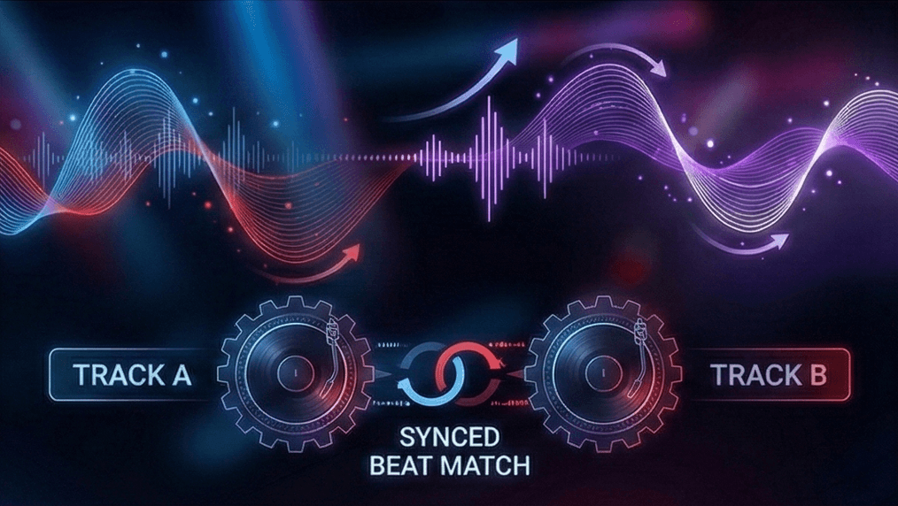
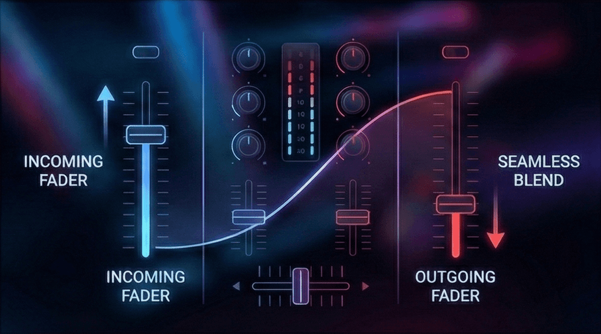
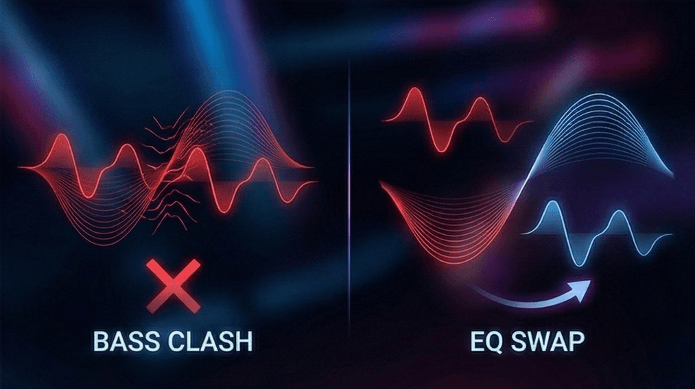
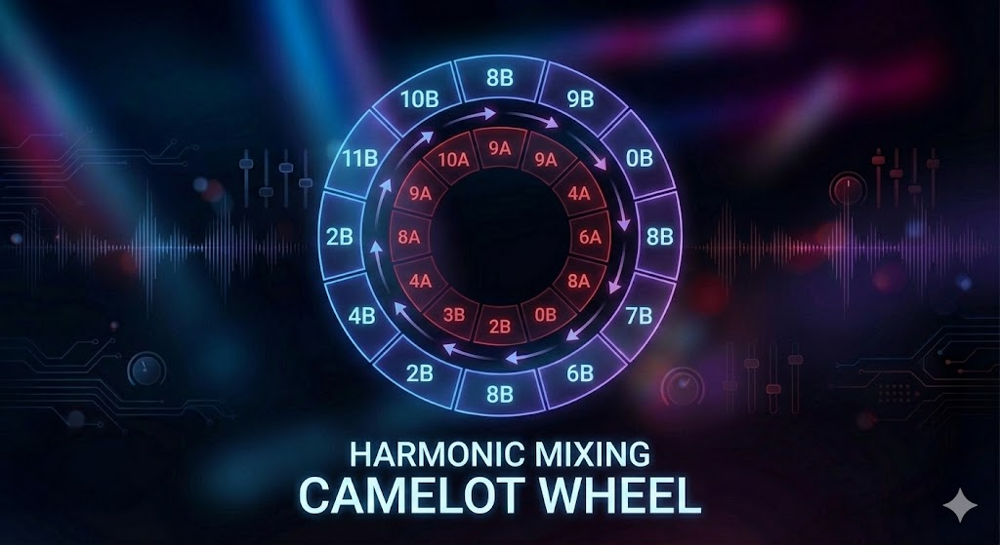

What You’ll Learn About DJ Blending Techniques
- The fundamental principles of EQ and volume control for smooth transitions.
- Advanced techniques like looping and FX to enhance your mix.
- How to handle genre-specific blends from House to Hip Hop.
- How PulseDJ.com helps you identify the perfect tracks for harmonic blending.
How PulseDJ Elevates Your Blending
While technique is vital, track selection is the fuel for your engine. Finding the right next track that matches the vibe, BPM, and Key of your current track can be mentally exhausting in the heat of a live gig. This is where PulseDJ.com becomes an essential tool for the professional dj.
PulseDJ is a smart DJ co-pilot that runs alongside your primary dj software, including Serato, Rekordbox, Virtual DJ, Traktor, and djay PRO. It doesn't replace your software; it enhances it by reading your history files to understand what you are playing in real-time.
For blending, PulseDJ provides two critical pieces of data in its suggestions panel: BPM and Key. When you are looking for that perfect next song, PulseDJ highlights compatible tracks in green. This visual indicator means the suggestion is a perfect harmonic match for the track you are currently playing. This makes harmonic mixing effortless, allowing you to focus on your eq knobs and faders rather than worrying if the melodies will clash.

Furthermore, PulseDJ ensures the suggestions are within a mixable range. It generally suggests tracks that are within +/- 10 BPM of your current track. This ensures you aren't trying to force a blend between songs with a massive tempo range difference, which usually results in a trainwreck.
If you are looking to discover what other djs are playing to make their sets pop, the PulseDJ HOT 100 chart shows you the top tracks currently being played by the community. You can even filter this by genre or country to find the hottest house track or techno anthem that will blend tracks perfectly in your specific region.

The Fundamentals of a Great DJ Mix

When I first started spinning, I thought being a good dj was just about playing popular songs. I quickly learned that the magic happens in the transition. DJ blending is the art of layering the audio of two songs so that the outgoing track and the incoming track become one cohesive unit. Unlike a "cut" or a "drop" mix, a blend creates a journey where the energy flows continuously.
To achieve this, you need to understand your dj equipment. Whether you are using CDJs, a controller, or just a laptop, the principles remain the same. The goal is to take two tracks at the same tempo and align their beats so they play in unison. This is known as the beat match. Once the beats are locked, you can begin to introduce the new track while the current track is still playing.
Managing the Kick Drum
The most common mistake many djs make is allowing the kick drum of both tracks to play at full volume simultaneously. In most dance music, especially House and Techno, the kick carries the majority of the energy. If you have the bass fully up on both the track playing and the next song, the frequencies will clash, causing the mix to sound messy and distorted (often called "phasing").
To fix this, you must master eq mixing. Your dj mixer has eq knobs that control specific frequency ranges: Low (Bass), Mid (Vocals/Melody), and High (Hi-hats/Percussion). When bringing in a new track playing, I usually keep the incoming track's bass turned all the way down. I wait for the right moment - usually a phrase change - to swap the basslines, turning the old bass down while simultaneously turning the new bass up.
Mastering Volume and Faders

While the EQs sculpt the sound, the faders control the volume. Most dj mixers have vertical channel faders and a horizontal crossfader. For long, smooth transitions, I prefer using the vertical channel faders.
Here is a standard workflow for a seamless mix:
- Start the second track with the volume fader at zero.
- Ensure the beat match is tight.
- Slowly fade the volume of the incoming tune up to about 70-80%.
- Use your eq controls to blend the high frequencies and mids.
- Swap the bass frequencies.
- Slowly fade out the first track until only the next tune is audible.
This technique ensures that all the music flows naturally. You want the audience to feel the change in energy without abruptly hearing the song change.
Advanced DJ Mixing Techniques
Once you have mastered the basic blend, you can move on to advanced dj mixing techniques that add creative flair to your dj sets.
The Infinite Loop Mix
Sometimes, the outgoing track ends too quickly, or the incoming track takes too long to build up. This is where looping saves the day. By setting a 4 or 8-bar loop on a percussion-heavy section of the one track that is finishing, you can keep the rhythm going indefinitely. This infinite loop mix gives you as much time as you need to bring in the next track without running out of music.
Filter Mixing

Instead of using the standard 3-band EQ, advanced djs often use filters. A high pass filter cuts out the low frequencies, leaving only the crispy highs, while a low pass filter removes the treble, leaving a muffled bass sound.
Using a pass filter allows you to sweep a track in or out of the mix with a single knob turn. For example, applying a high pass filter to the outgoing track naturally removes its energy and bass, making space for the bass track of the new song to take over.
FX and Sound Color
Sound effects like Reverb, Echo, and Delay are powerful tools when used sparingly. If you are doing a tempo transition mix - moving between genres with vastly different BPMs - using a heavy "Echo Out" on the playing track can mask the silence as you drop in a new track at a different speed.
Harmonic Mixing and Track Selection

You can have the best technical skills in the world, but if the songs don't sound good together, the blend will fail. This is where harmonic mixing comes into play. Every song is written in a specific musical key. Mixing techniques that ignore key often result in "key clash," where the melodies sound dissonant and unpleasant.
To blend tracks seamlessly, you generally want to mix songs that are in the same key or a compatible key (often a fifth apart). Most dj software analyzes this for you, often using the Camelot Wheel system (e.g., 8A, 5B). When you mix harmonically, the melodies of the mix tracks interplay beautifully, sounding like a remix rather than just two songs playing at once.
Genre-Specific Blending
Different genres require different approaches to dj transition styles.
- House and Techno: These genres are built for long, slow blends. You might have two tracks playing together for two or three minutes. You need to identify the mix out zones - usually the outro of the track where the melody strips back to drums.
- Hip Hop: A hip hop set requires faster, sharper mixing. Because the vocals often start on the first beat, you don't have long intros. Cut mixing or very short blends are common here. You might use hot cues to jump straight to the chorus or a recognizable break.
Comparison of Blending Styles
Blending Style
Best Genres
Difficulty
Key Tools Used
The Long Blend
House, Techno, Trance
Medium
EQs, Line Faders, Harmonic Matching
The Cut Mix
Hip Hop, Trap, Dubstep
Medium
Crossfader, Hot Cues
Filter Mix
Progressive, EDM
High/Low Pass Filters
Loop Mix
All Genres
Loops, EQ, Beat Grids
Tempo Transition
Open Format
FX (Echo/Reverb), Wide Pitch range
Final Thoughts: Start Mastering DJ Blending with PulseDJ
Becoming a great mix artist takes practice, patience, and a good ear. You need to spend time with your one song after another, learning how frequencies interact and how to control the energy of the room. From track fades to advanced techniques, every tool you master adds to your unique style.
However, the foundation of every smooth blend is playing the right music. No amount of eq mixing can save a mix between two songs that simply don't belong together. By using PulseDJ.com , you get an intelligent assistant that handles the complex math of key and tempo compatibility. It allows you to visualize the perfect incoming track, ensuring your dj sets sound professional and cohesive.
Would you like to mix with confidence and never run out of compatible tracks? Download PulseDJ for free today and let AI help you perfect your blend.
‹ How To Mix Songs Together: DJ Techniques